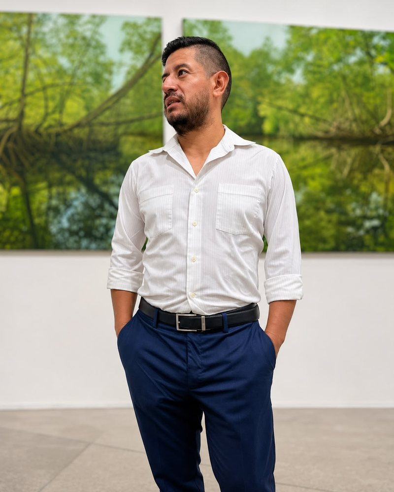
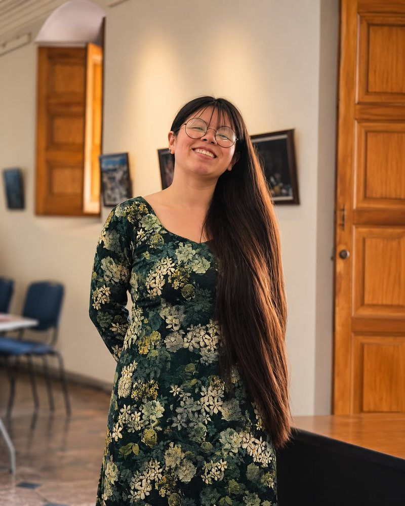
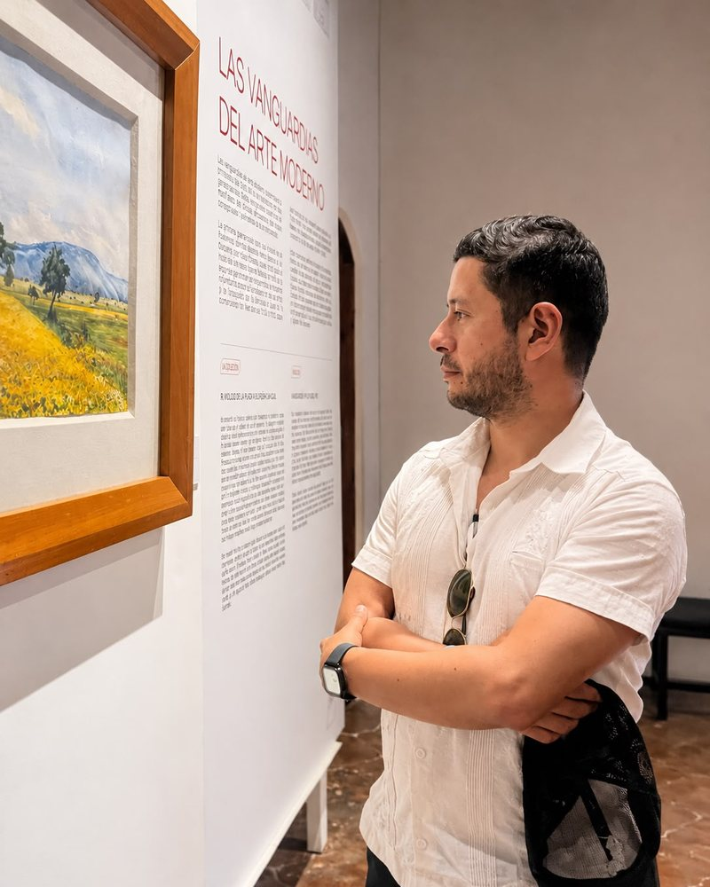

Censo de Población y Vivienda
Fuente del conteo de población que se usa para distribuir la muestra nacional entre regiones.
Consultar Censo 2018 · INESTEPS for Guatemala
Somos un equipo multidisciplinario que reúne distintas áreas y las experiencias personales de sus integrantes para comunicar datos estadísticos de forma accesible y comprensible para la población.
Zircon Data es una empresa de desarrollo biomédico con enfoque social.

Arquitecto

Diseñadora profesional
Abogada y notaria

Ingeniero en sistemas/médico y cirujano general
Fuente del conteo de población que se usa para distribuir la muestra nacional entre regiones.
Consultar Censo 2018 · INEEl cuadro 9 aporta las proyecciones por edad simple para estimar la población objetivo de 18 a 69 años.
Consultar cuadro 9 · INEGuía para diseñar la encuesta y organizar la entrevista, las mediciones físicas y las pruebas bioquímicas.
Consultar manual STEPS · OMSDefiniciones, referencias históricas de STEPS 2015 y su relación con otras fuentes nacionales.
Ver cotejo de indicadores